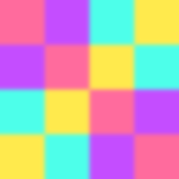

Demos.
VHS-recorded GIFs of every example shipped with the library. Regenerated automatically on every push that touches the source.


Image-to-cell renderer
Image-to-cell renderer for the terminal. PNG/JPEG/static GIF decoded via ext-gd and rendered via the best available protocol: Sixel, Kitty graphics, iTerm2 inline images, Unicode half-block, or quarter-block fallback.
composer require sugarcraft/candy-mosaicuse SugarCraft\Mosaic\Mosaic;
use SugarCraft\Mosaic\ImageSource;
$mosaic = Mosaic::halfBlock();
$image = ImageSource::fromFile('cat.png');
$ansi = $mosaic->render($image, width: 40, height: 20);
echo $ansi;use SugarCraft\Mosaic\Renderer\QuarterBlockRenderer;
// Probe terminal once, pick best protocol
$mosaic = Mosaic::probe();
// Force a specific backend
$mosaic = Mosaic::sixel();
$mosaic = Mosaic::kitty();
$mosaic = Mosaic::iterm2();
$mosaic = Mosaic::halfBlock();
// Render — returns ANSI bytes
$ansi = $mosaic->render($image, width: 40, height: 20);
// Builder for fine-grained control
$mosaic = Mosaic::builder()
->withRenderer(new QuarterBlockRenderer())
->withResize(width: 40, height: 20)
->build();Mosaic::probe() checks environment variables and DA1 capability query. Cached per-process.a=T), then place at multiple offsets (a=p) to reduce bandwidth. Use KittyOptions::transmit() then KittyOptions::place().f=1) before base64-encoding via KittyOptions::withCompression(1). Useful for large images.maxColors (1–256) to SixelRenderer constructor to limit palette size for terminals with limited truecolor support.| Class | Method | Description |
|---|---|---|
| Mosaic | probe() | Auto-detect best terminal protocol |
| Mosaic | sixel(), kitty(), iterm2(), halfBlock() | Force specific renderer |
| Mosaic | render(image, width, height) | Render image to ANSI string |
| Mosaic | builder() | Create builder for fine-grained control |
| Renderer | delete(imageId) | Remove a previously rendered image (Kitty=APC delete; iTerm2=OSC 1337 Pop; others=empty) |
| KittyRenderer | renderWithOptions(image, width, height, KittyOptions) | Render with Kitty protocol options (virtual-image a=p, compression f=1) |
| KittyOptions | transmit(id), place(id, x, y) | Factory: transmit inline or place a previously transmitted virtual image |
| KittyOptions | withZIndex(z), withCompression(f), withUseVirtual(bool) | Builder: z-index stacking, zlib compression (f=1), virtual-image mode (a=p) |
| QuarterBlockRenderer | new | 2×2 sub-pixel renderer via Mosaic::builder()->withRenderer(new QuarterBlockRenderer()) |
| HalfBlockRenderer | new, supportsAlpha() | Unicode ▀ renderer with transparent-pixel handling (null alpha skips SGR codes, letting terminal default show through). supportsAlpha() returns false — transparency is rendered by omitting SGR, not blending. |
| SixelRenderer | new(dither, maxColors), maxColors(), dither() | DEC sixel renderer with median-cut quantizer (up to 256 colors). Constructor accepts maxColors (1–256, default 256) to limit palette size for limited-truecolor terminals. Dither enum: FloydSteinberg, Stucki, Atkinson, None. |
| ImageSource | fromFile(path) | Load image from file |
| ImageSource | fromGd(image) | Create from GD resource |
VHS-recorded GIFs of every example shipped with the library. Regenerated automatically on every push that touches the source.